For a couple after active-but-accessible, set up your three hero scenes first: Penang Hill funicular + The Habitat canopy walks (easy, paved, ~€21, half-day)[1][2]; the national-park jungle trek to Turtle / Monkey Beach (moderate, ~1.5 h each way, no guide, ~€11)[3][4]; and a guided Balik Pulau countryside cycling tour through durian orchards (easy, half-day, ~€30)[22][35]. Shoot Dec–Feb for the driest skies, call dawn for every walk, and a June trip cashes in durian season[16].
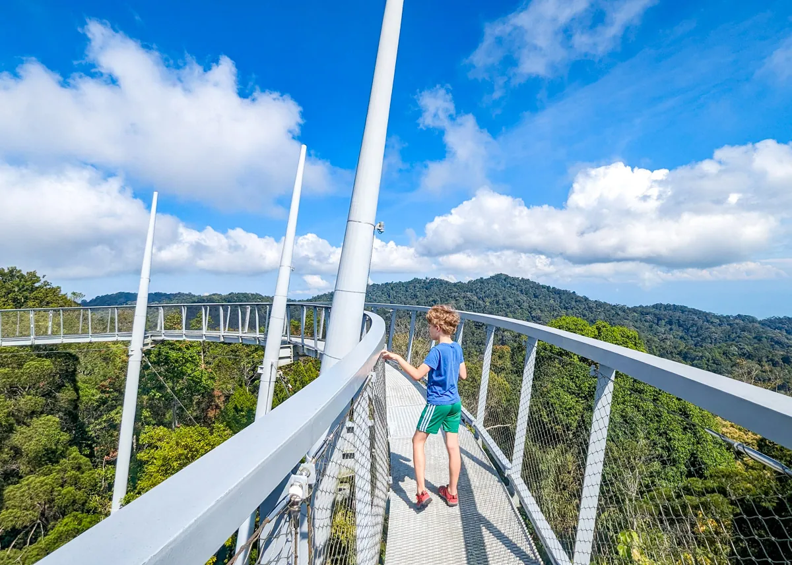
Ride the funicular up from Air Itam (RM40 adult return, 6:30am–11pm, ~half-hourly)[2], then walk The Habitat's 1.6 km paved loop — the 230 m Langur Way Canopy Walk (billed as the world's longest double-span stressed-ribbon bridge) and the 800 m Curtis Crest Tree Top Walk, Penang's highest public viewpoint. Flat, railing-protected, fine for nervous heads for heights, and consistently a top-rated attraction[20][21][41]. The Habitat also runs guided sunset nature walks ending at Curtis Crest[20].
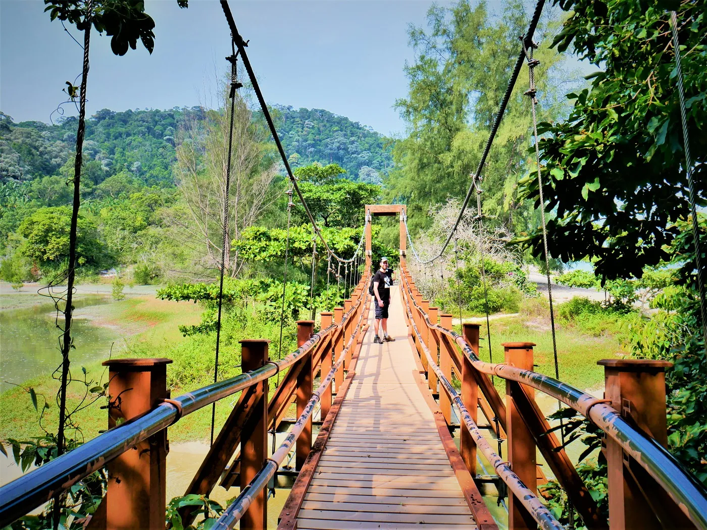
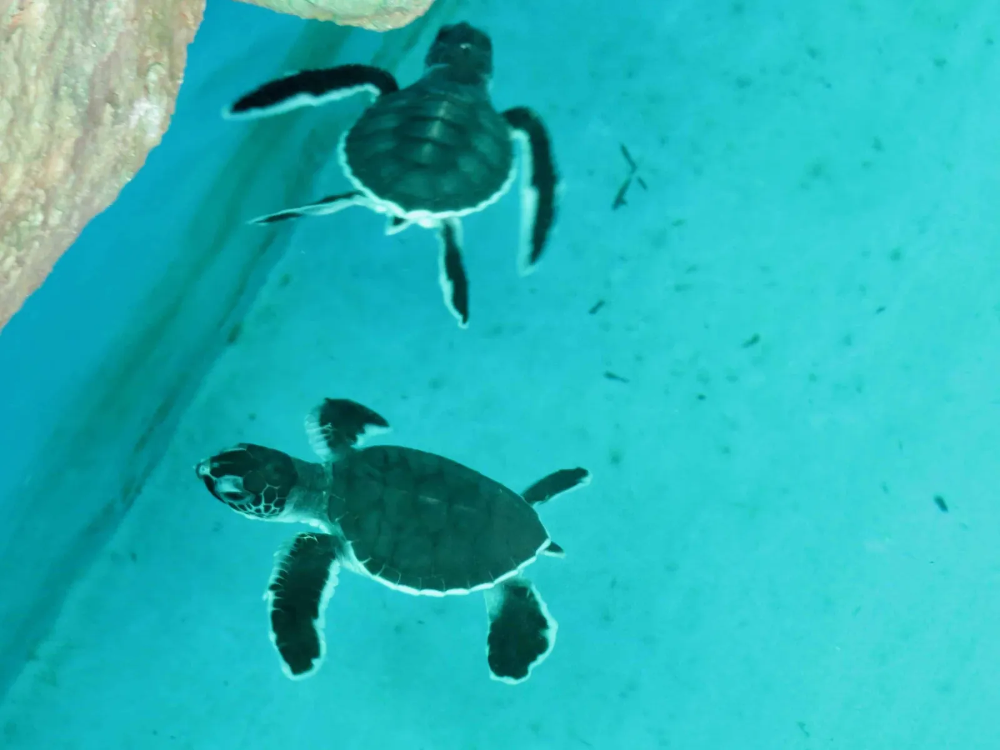
The classic walk: ~3.8 km / 1.5 h one-way through coastal rainforest to Pantai Kerachut, with a free turtle conservation centre and a rare meromictic lake where fresh and salt water sit in unmixed layers — one of only a handful in Asia. Park entry RM50 / €11 (card only, register online by phone)[3][38].
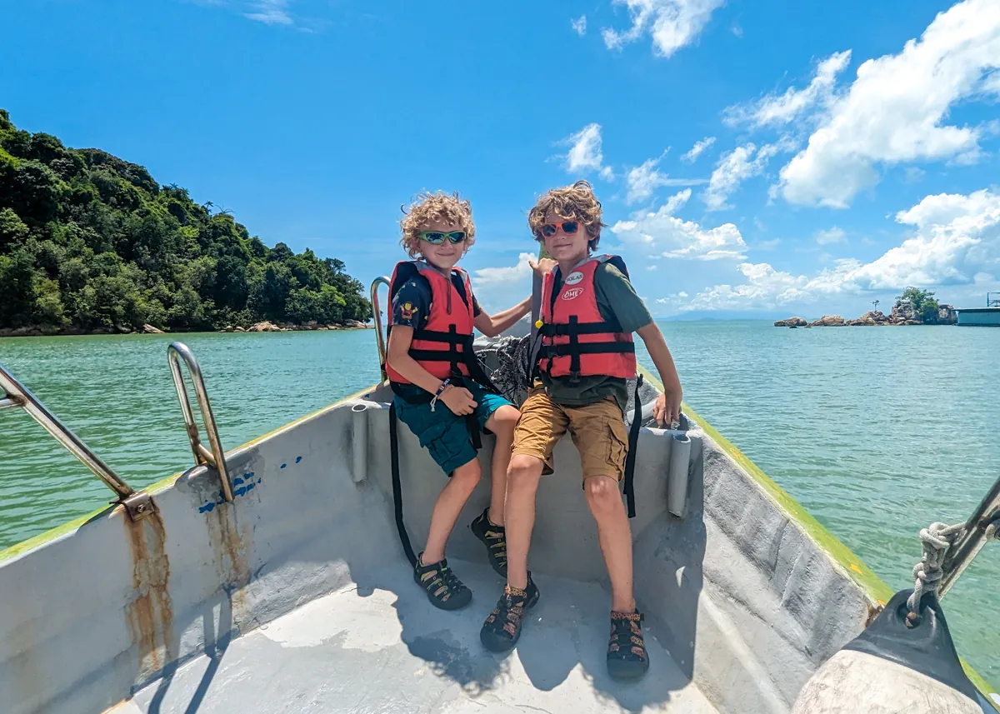
A similar ~1.5 h trek, well-trodden, bridged and signposted — "you can't get lost on the path", so no guide. Difficulty is driven by heat and humidity, not terrain; carry 1.5–2 L water and start early. Don't fancy the walk back? Boats run ~RM100 return from the jetty[4][28][39].
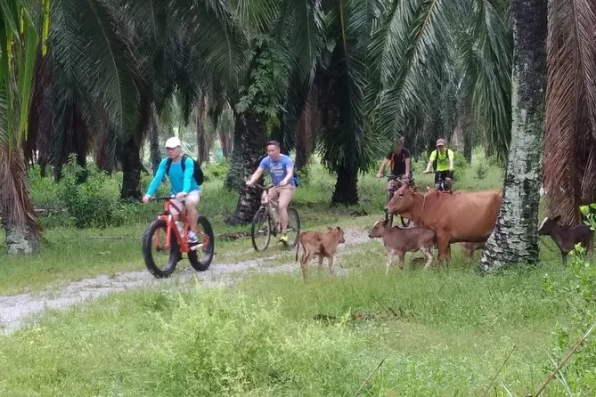
The island's flat rural west: guided tours roll past paddy fields, fruit orchards, mangroves, fishing villages and kampungs over ~2 h, suitable for most fitness levels. Half-day trips with transfer, bike and guide run ~€30–39, often with breakfast. Balik Pulau is Penang's durian heartland[22][23][36].
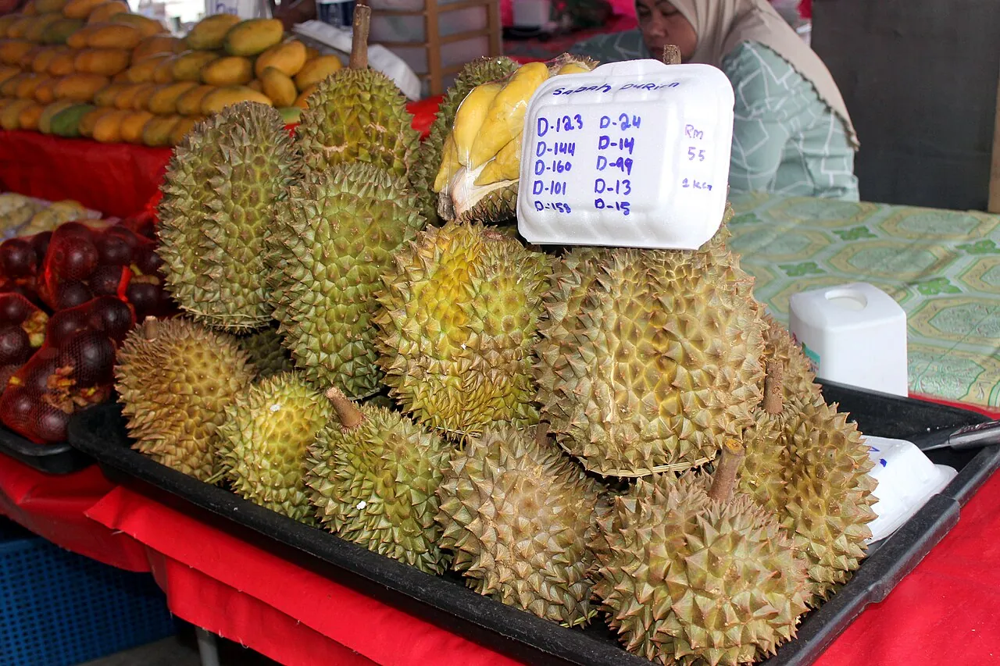
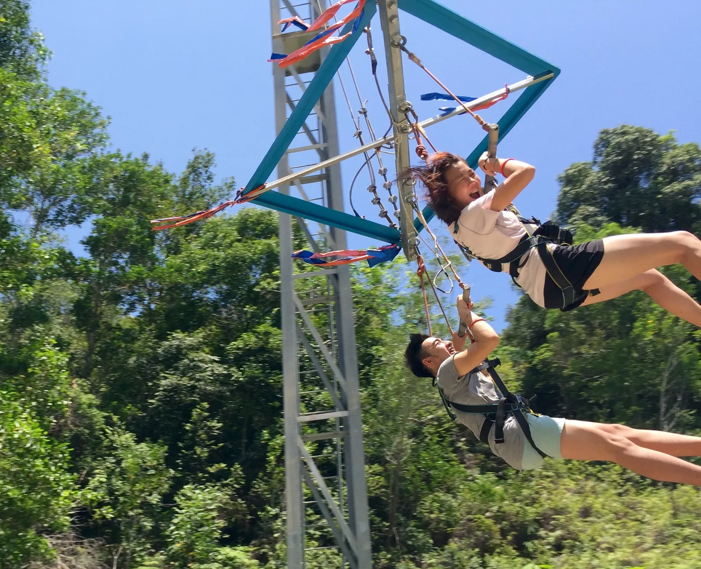
ESCAPE is a rainforest adventure-and-water park with 40+ rope courses, ziplines, climbing and Guinness-record slides (incl. the 1,111 m tube water slide). One ticket from ~€40 covers both Adventureplay and Waterplay — an active full day, not an extreme one; kids welcome[5][6][19].
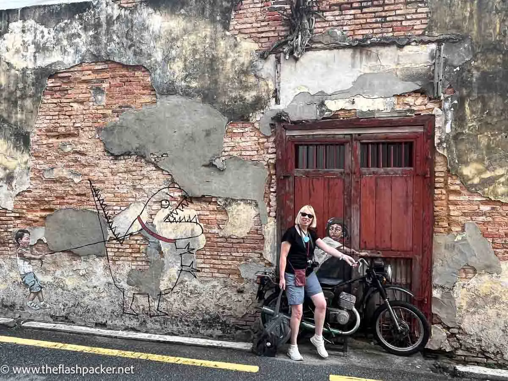
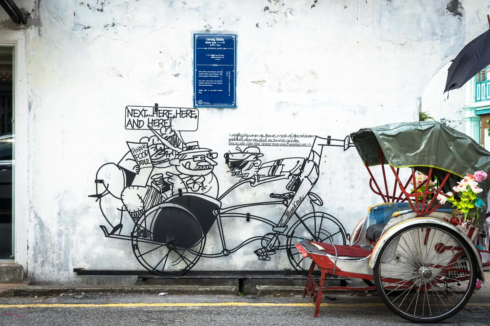
Treat the murals as a half-day walking scene. Ernest Zacharevic's interactive paintings (Kids on a Bicycle, Boy on a Motorbike) anchor a trail of 30+ murals around Armenian, Chulia and Muntri streets, interleaved with the 52 steel-rod "Marking George Town" caricatures that narrate street histories — a free, self-paced scavenger hunt. Go early[12][13][29].
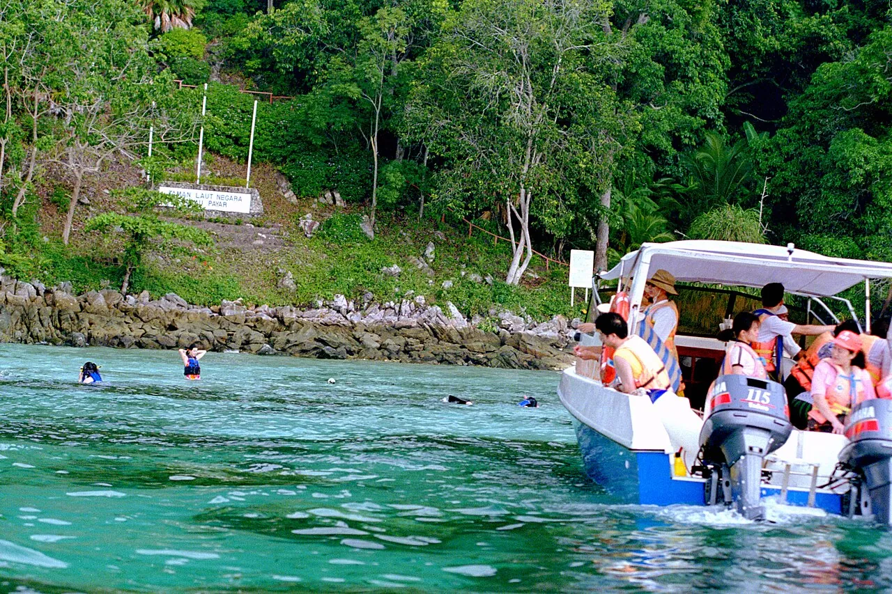
Malaysia's oldest marine sanctuary, ~30 km north, reached by a ~1 h ferry from Swettenham Pier to a floating platform with an underwater viewing chamber. Packaged tours (~8 h, transfer, gear, buffet) run ~€120 on the big platforms, cheaper with local operators. Set expectations as "easy reef snorkel + baby reef sharks", not world-class diving[14][15].
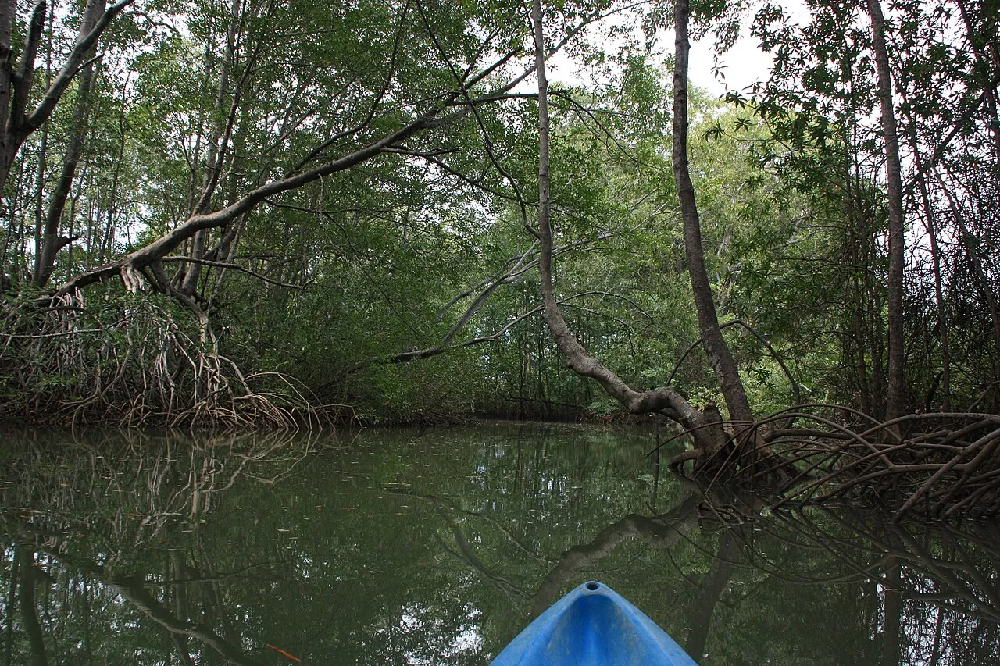
Casual paddling is cheap: kayaks from RM15/person/hr at the Penang Water Sports Centre, and ~RM30/hr (seats three) at Monkey Beach. For mangroves, the national-park jetty arranges boat trips to the Pantai Acheh / Sungai Tukun mangroves (~RM450 per boat with stops)[8][28][7].
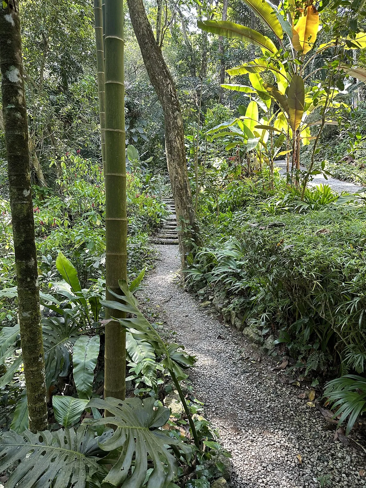
A shaded eight-acre walk through ~500 spices and herbs on the Teluk Bahang coast. Self-guided from ~€7, or ~€10 with an expert guide; weekend guided tours at 9 / 11am / 1:30pm. A gentle, cooling counterpoint to the jungle treks[11][10]. Official site.
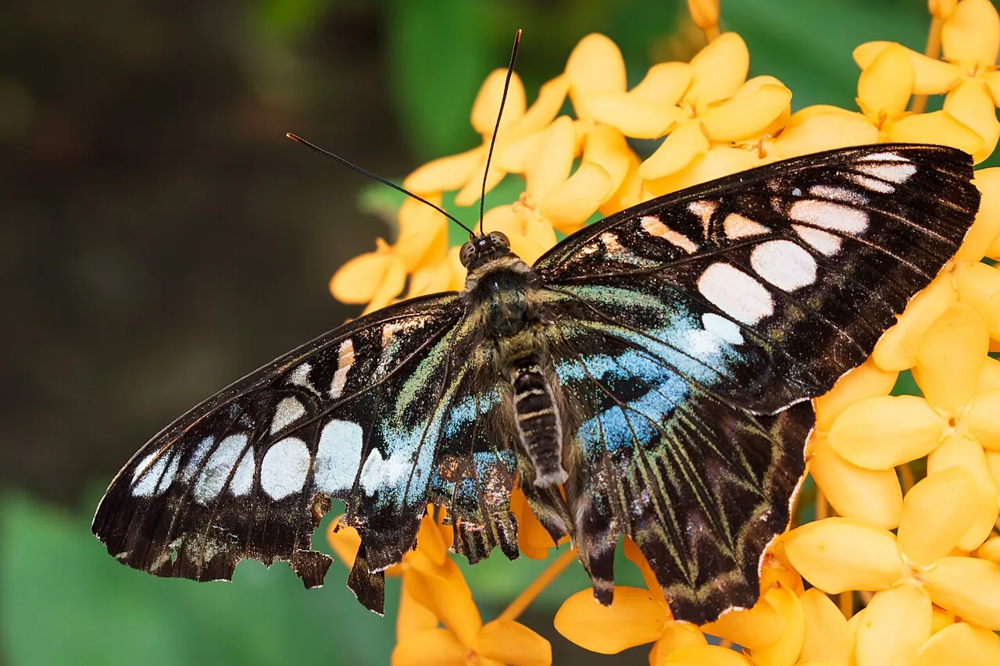
Next door to the Spice Garden, Entopia houses 15,000+ free-flying butterflies across indoor and outdoor zones; tickets from RM65 (~€14), open 9am–6pm. An easy, all-weather scene that pairs with Teluk Bahang's other gentle stops[9].
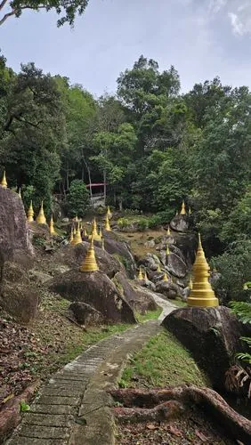
Want a real sweat? Hike up instead of riding. The Heritage Trail and Jeep Track from the Botanic Gardens are easier paved routes, while the Moon Gate trail is a steep ~5–5.5 h round-trip with stair climbs and rocky scrambles — strenuous but non-technical. Descend by funicular; the summit's Monkey Cup Garden (pitcher plants) and Kopi Hutan café reward the climb[26][31][24].
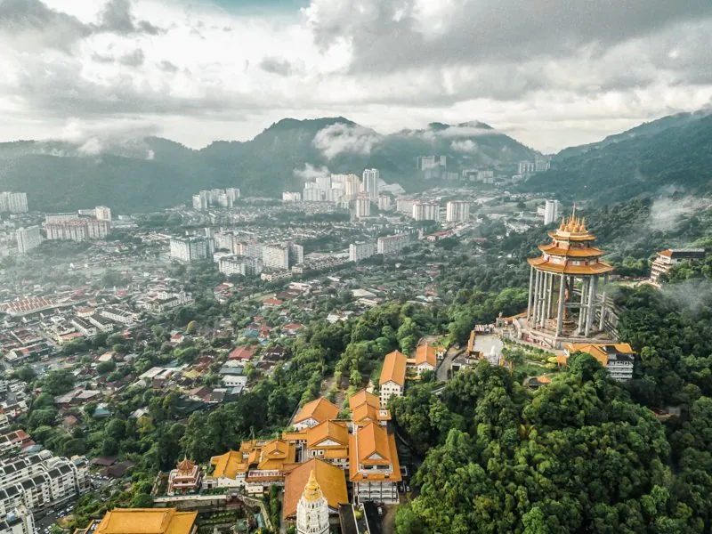
Best light is December–February — blue skies, fewer storms, less extreme heat. Sep–Nov are the wettest and best avoided for treks. It's hot and humid year-round, so dawn calls are the single biggest comfort win. A June visit trades rain risk for durian-season payoff[16][4].
Hawker legends, Michelin Bib stalls, kopitiams and one-star Nyonya, mapped by neighbourhood.
expeditionRestored shophouses, the Blue Mansion, the E&O, design conversions and a hill retreat.
expeditionThe UNESCO core, street art, clan houses, jetties and temples, with 2026 hours and prices.
expeditionLive pit vipers, haunted tunnels, carnivorous gardens, vanishing trades and pig-blood noodles.
expeditionFestivals worth timing for, the museums that earn the ticket, and crafts you can try yourself.
expeditionGetting in from KL / the Cameron Highlands, onward to Langkawi, and the day-trip orbit.
survey